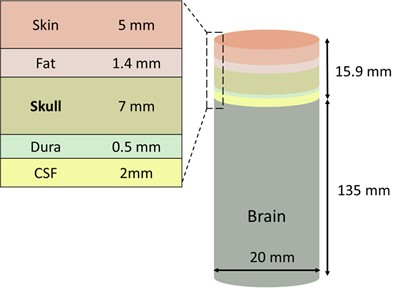
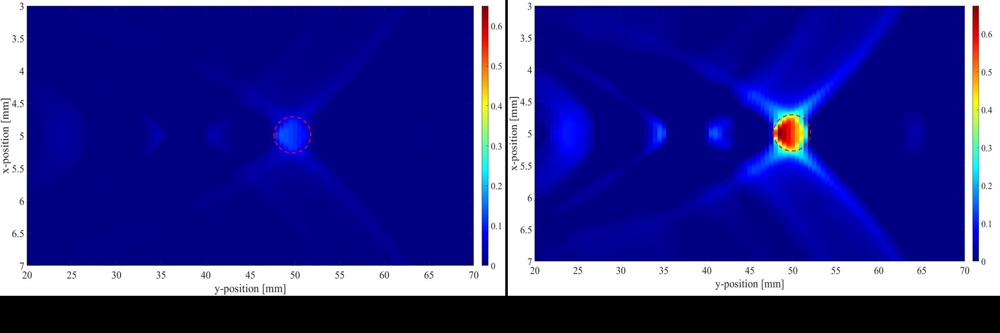

<div id="portfolio-page" class="portfolio-page-content">
    <div class="container">
        <!-- Portfolio Navigation -->
        <div class="portfolio-nav">
            <div id="portfolio-close-button" class="portfolio-close-button">
                <a href="#portfolio"><i class="fa fa-close"></i></a>
            </div>
        </div>

        <!-- Portfolio Title -->
        <div class="portfolio-title">
            <h1>Photoacoustic Microscopy of the Brain Through the Intact Skull</h1>
        </div>

        <div class="row">
            <!-- Images / Carousel -->
            <div class="col-sm-7 col-md-7 portfolio-block">
                <div class="owl-carousel portfolio-page-carousel">
                    <div class="item">
                        
                    </div>
                    <div class="item">
                        
                    </div>
                </div>

                <script type="text/javascript">
                    jQuery(document).ready(function($){
                        $('.portfolio-page-carousel').owlCarousel({
                            smartSpeed: 1200,
                            items: 1,
                            loop: true,
                            dots: true,
                            nav: true,
                            navText: false,
                            margin: 10
                        });
                    }); 
                </script>
            </div>

            <!-- Project Description -->
            <div class="col-sm-5 col-md-5 portfolio-block">

                <ul class="project-general-info">
                    <li>
                        <i class="fa fa-user"></i> 
                        <strong>Collaborators:</strong>
                        <a href="https://dornsife.usc.edu/profile/hamid-chabok/" target="_blank">Hamid Chabok</a>, 
                        <a>Pooya Shahriari</a>,
                        <a href="https://www.researchgate.net/profile/Soroush-Shafigh-2" target="_blank">Shoroush Shafigh</a>,
                    </li>  
                    <li>
                        <i class="fa fa-calendar"></i> July 2021 - July 2022
                    </li>
                </ul>
                <div class="block-title">
                    <h3>Motivation</h3>
                </div>
                <p class="text-justify">
                    Accurate imaging of brain tumors is crucial for early diagnosis and effective treatment planning. Photoacoustic microscopy (PAM)
                    combines optical contrast with acoustic detection to provide high-resolution images, but the skull significantly attenuates both
                    light and acoustic waves. This physical barrier makes non-invasive imaging of brain tumors extremely challenging. Addressing this 
                    limitation is essential to enable reliable, high-resolution imaging through intact tissue, which could greatly improve diagnostic 
                    capabilities and patient outcomes.
                </p>
                <div class="block-title">
                    <h3>Results</h3>
                </div>
                <p class="text-justify">
                    To address the challenges of skull-induced attenuation in photoacoustic microscopy, we developed a novel adaptive liquid lens, termed 
                    C2AM, which reshapes the light into a focal line along the beam axis rather than a single focal point. This extended focus keeps light 
                    concentrated over a defined depth range in the brain, improving optical penetration and enhancing photoacoustic signal generation. The 
                    lens can also dynamically shift the location of the focal line by adjusting the applied voltage, allowing precise targeting of different 
                    regions without physically moving the lens. Simulations demonstrated that our C2AM-based approach provided significantly clearer and more 
                    accurate visualization of brain tumors compared to conventional photoacoustic microscopy.
                <!-- Software and Frameworks -->
                <div class="tags-block">
                    <div class="block-title">
                        <h3>Software and Frameworks:</h3>
                    </div>
                    <ul class="tags">
                        <li><a>MATLAB</a></li>
                        <li><a>C++</a></li>
                        <li><a>ValoMC Toolbox (MATLAB)</a></li>
                        <li><a>K-Wave Toolbox (MATLAB)</a></li>
                    </ul>
                </div>
            </div>
        </div>
    </div>
</div>
